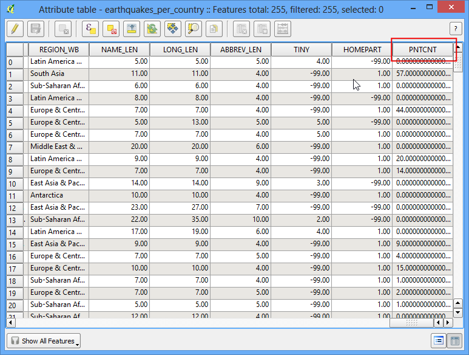
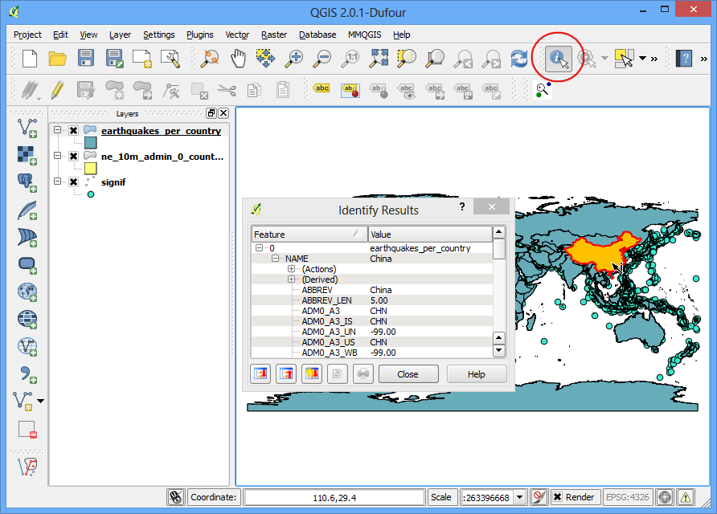

Аналіз кількості точок всередині багатокутників
The power of GIS lies in analysing multiple data sources together. Often the
answer you are seeking lies in many different layers and you need to do some
analysis to extract and compile this information. One such type of analysis is
Points-in-Polygon. When you have a polygon layer and a point layer - and
want to know how many or which of the points fall within the bounds of each
polygon, you can use this method of analysis.
Огляд завдання
Given the locations of all known significant earthquakes, we will try to find
out which country has had the highest number of earthquakes.
Виконання
Відкрийте меню і виберіть завантажений файл signif.txt.

- Since this is a tab-delimited file, choose Tab as the
File format. The X field and Y field
would be auto-populated. Click OK.
Примітка
You may see some error messages as QGIS tries to import the file. These are
valid errors and some rows from the file will not be imported. You can ignore
the errors for the purpose of this tutorial.

- As the earthquake dataset has Latitude/Longitude coordinates, choose
WGS 84 EPSG:436 as the CRS in the Coordinate
Reference System Selector dialog.

- The earthquake point layer would now be loaded and displayed in QGIS. Let’s
also open the Countries layer. Go to . Browse to the downloaded
ne_10m_admin_0_countries.zip file and
click Open. Select the ne_10m_admin_0_countries.shp as the
layer in the Select layers to add... dialog.

- Click on

- In the pop-up window, select the polygon layer and point layer respectively.
Name the output layer as
earthquake_per_coutry.shp and Click
OK.
Примітка
Be patient after clicking OK, QGIS may take upto 10 minutes to calculate the
results.
- When asked whether you want to add the layer to TOC, click Yes.

- You will see a new layer is added to the table of content. Open the
attribute table by right-clicking on the layer and selecting Open
Attribute Table.

- In the attribute table, you will notice a new field named
PNTCNT. This is
the count of number of points from the earthquakes layer that fall within
each polygon.

- To get our answer, we can simply sort the table by
PNTCNT field and the
country with highest count will be our answer. Click 2-times on the
PNTCNT column to get it sorted in descending order. Click on the first
row to select it and close the Attribute Table.

- Back in the main QGIS window, you will see one feature highlighted in
yellow. This is the feature linked to the selected row in the attribute
table which had the highest number of points. Select the
Identify tool and click on that polygon. You can see that the
country with the highest number of Significant earthquakes is China.

We determined from the simple analysis of 2 datasets that China has had
the highest number of major earthquakes. You may refine this analysis further
by taking into consideration the population as well as the size of the country
and determine which is the most adversely affected country by major
earthquakes.